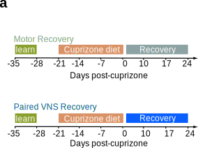
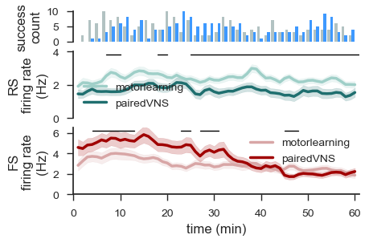

Figure 6 Neuropixels#
Panel a#
(aka Shay spending his Friday night drawing a mouse while his partner throws dog toys at him)

Panel b (Overall firing rates)#
Show code cell source
# --- 1. Prepare Data ---
motor_learning_firing_rate = df_zeta[df_zeta['experiment'] == 'motorlearning']['overall_rate'].values
paired_vns_firing_rate = df_zeta[df_zeta['experiment'] == 'pairedVNS']['overall_rate'].values
# --- 2. Statistical Testing (Restored) ---
ks_statistic, ks_p_value = stats.kstest(motor_learning_firing_rate, paired_vns_firing_rate)
mw_statistic, mw_p_value = stats.mannwhitneyu(motor_learning_firing_rate, paired_vns_firing_rate)
wasserstein_dist = stats.wasserstein_distance(motor_learning_firing_rate, paired_vns_firing_rate)
ad_result = stats.anderson_ksamp([motor_learning_firing_rate, paired_vns_firing_rate])
print("--- Comparison of Distributions ---")
print(f"Mann-Whitney U Test: Statistic={mw_statistic:.4f}, P-value={mw_p_value:.4f}")
print(f"Kolmogorov-Smirnov Test: Statistic={ks_statistic:.4f}, P-value={ks_p_value:.4f}")
print(f"Anderson-Darling k-sample Test: Statistic={ad_result.statistic:.4f}, P-value={ad_result.pvalue:.4f}")
print(f"Wasserstein Distance (EMD): {wasserstein_dist:.4f}")
print("-----------------------------------")
# --- 3. Setup Plot ---
# Exact dimensions from your code
fig, ax = plt.subplots(figsize=(1, 3))
# --- 4. Plotting Parameters ---
bw_method_choice = 0.15
num_eval_points = 250
x_position = 0 # Center violin at 0
width = 0.8
# Define Groups
experiments_list = sorted(df_zeta['experiment'].unique()) # ['motorlearning', 'pairedVNS']
# Loop to draw Split Violin
for i, experiment in enumerate(experiments_list):
data = df_zeta[df_zeta['experiment'] == experiment]['overall_rate'].values
# Calculate KDE
kde = stats.gaussian_kde(data, bw_method=bw_method_choice)
x_eval = np.linspace(data.min() - (data.max()-data.min())*0.1,
data.max() + (data.max()-data.min())*0.1, num_eval_points)
violin_shape = kde.pdf(x_eval)
violin_shape = violin_shape / violin_shape.max() * width / 2.0
# Plotting Logic
if experiment == 'motorlearning': # Left Side
ax.fill_betweenx(x_eval, x_position, x_position - violin_shape, color="#cfd9d9ff", alpha=0.5, label=experiment)
ax.plot(x_position - violin_shape, x_eval, color="#9fb3b3ff", linewidth=1.5)
# Sticks
for val in data:
index_val = np.argmin(np.abs(x_eval - val))
stick_xmax = x_position - violin_shape[index_val]
ax.hlines(y=val, xmin=x_position, xmax=stick_xmax, color='#9fb3b3ff', linewidth=0.5, alpha=0.3)
elif experiment == 'pairedVNS': # Right Side
ax.fill_betweenx(x_eval, x_position, x_position + violin_shape, color='#7fbcffff', alpha=0.5, label=experiment)
ax.plot(x_position + violin_shape, x_eval, color='#0e80ffff', linewidth=1.5)
# Sticks
for val in data:
index_val = np.argmin(np.abs(x_eval - val))
stick_xmax = x_position + violin_shape[index_val]
ax.hlines(y=val, xmin=x_position, xmax=stick_xmax, color='#0e80ffff', linewidth=0.5, alpha=0.3)
# --- 5. Significance Annotation (Exact Position) ---
# Hardcoded params from your notebook
x1, x2 = 0, 1
y, h, col = 9.5, 0.1, 'k' # Fixed y=9.5 as per your snippet
if mw_p_value < 0.05:
star = '*'
if mw_p_value < 0.01: star += '*'
if mw_p_value < 0.001: star += '*'
# Stars centered at 0.5 (relative to x1, x2 logic)
ax.text((x1+x2)*.5, y+h, star, ha='center', va='bottom', color=col, fontsize=16)
else:
# "n.s." placed at 0.25 (shifted left/center-left)
ax.text((x1+x2)*.25, y+h+0.2, 'n.s.', ha='center', va='bottom', color=col)
# --- 6. Formatting ---
ax.set_xticks([x_position])
ax.set_xticklabels([""])
ax.set_ylabel("firing rate (Hz)")
ax.tick_params(axis='both', direction='out', length=6)
npl.utils.clear_right(ax)
npl.utils.clear_top_bottom(ax)
plt.show()
--- Comparison of Distributions ---
Mann-Whitney U Test: Statistic=33460.0000, P-value=0.1877
Kolmogorov-Smirnov Test: Statistic=0.1148, P-value=0.0781
Anderson-Darling k-sample Test: Statistic=2.0433, P-value=0.0468
Wasserstein Distance (EMD): 0.4442
-----------------------------------

Statistical Note: Distribution vs. Median
While the Mann-Whitney U test (p=0.1877) indicates no significant difference in the median firing rates between the Motor Learning and Paired VNS groups, the Anderson-Darling k-sample test (p=0.0468) reveals a statistically significant difference in the underlying distributions.
This suggests that while the average activity levels are comparable, Paired VNS may be modulating specific sub-populations of neurons differently. To investigate this distributional shift, we next stratify the population into Regular Spiking (RS) and Fast Spiking (FS) neurons.
While the Mann-Whitney U test (p=0.1877) indicates no significant difference in the median firing rates between the Motor Learning and Paired VNS groups, the Anderson-Darling k-sample test (p=0.0468) reveals a statistically significant difference in the underlying distributions.
This suggests that while the average activity levels are comparable, Paired VNS may be modulating specific sub-populations of neurons differently. To investigate this distributional shift, we next stratify the population into Regular Spiking (RS) and Fast Spiking (FS) neurons.
Panel c (FS & RS Neurons)#
Show code cell source
# --- 1. Prepare Data ---
# RS Neurons
ml_rs = df_zeta[(df_zeta['experiment'] == 'motorlearning') & (df_zeta['waveform_class'] == 'rs')]['overall_rate'].values
vns_rs = df_zeta[(df_zeta['experiment'] == 'pairedVNS') & (df_zeta['waveform_class'] == 'rs')]['overall_rate'].values
# FS Neurons
ml_fs = df_zeta[(df_zeta['experiment'] == 'motorlearning') & (df_zeta['waveform_class'] == 'fs')]['overall_rate'].values
vns_fs = df_zeta[(df_zeta['experiment'] == 'pairedVNS') & (df_zeta['waveform_class'] == 'fs')]['overall_rate'].values
# --- 2. Statistical Testing (Full Block) ---
mw_stat_rs, mw_p_rs = stats.mannwhitneyu(ml_rs, vns_rs)
mw_stat_fs, mw_p_fs = stats.mannwhitneyu(ml_fs, vns_fs)
ks_stat_rs, ks_p_rs = stats.kstest(ml_rs, vns_rs)
ks_stat_fs, ks_p_fs = stats.kstest(ml_fs, vns_fs)
ad_res_rs = stats.anderson_ksamp([ml_rs, vns_rs])
ad_res_fs = stats.anderson_ksamp([ml_fs, vns_fs])
print("--- Comparison of Distributions ---")
print(f"Mann-Whitney U (RS): Stat={mw_stat_rs:.4f}, P={mw_p_rs:.4f}")
print(f"Mann-Whitney U (FS): Stat={mw_stat_fs:.4f}, P={mw_p_fs:.4f}")
print(f"KS Test (RS): Stat={ks_stat_rs:.4f}, P={ks_p_rs:.4f}")
print(f"KS Test (FS): Stat={ks_stat_fs:.4f}, P={ks_p_fs:.4f}")
print(f"Anderson-Darling (RS): Stat={ad_res_rs.statistic:.4f}, P={ad_res_rs.pvalue:.4f}")
print(f"Anderson-Darling (FS): Stat={ad_res_fs.statistic:.4f}, P={ad_res_fs.pvalue:.4f}")
print("-----------------------------------")
# --- 3. Define Plotting Function (Manual Split Violin) ---
def plot_manual_split_violin(ax, data_left, data_right, palette):
"""
Manually builds a split violin plot from a KDE with an internal 'stick' plot.
"""
def plot_half(data, direction, color):
if len(data) > 1:
kde = stats.gaussian_kde(data, bw_method=0.15)
# Use a consistent y_eval range for better comparison
y_min = 0
y_max = max(np.max(data_left) if len(data_left)>0 else 0,
np.max(data_right) if len(data_right)>0 else 0)
y_max = max(10, y_max) # at least 10
y_eval = np.linspace(y_min - y_max*0.1, y_max + y_max*0.1, 250)
shape = kde.pdf(y_eval)
shape = shape / shape.max() * 0.8 / 2.0
ax.fill_betweenx(y_eval, 0, direction * shape, color=color, alpha=0.7)
ax.plot(direction * shape, y_eval, color=color, linewidth=2)
for val in data:
if val < y_eval.min() or val > y_eval.max(): continue # Skip outliers
idx = np.argmin(np.abs(y_eval - val))
stick_xmax = direction * shape[idx]
ax.hlines(y=val, xmin=0, xmax=stick_xmax, color=color, linewidth=0.5, alpha=0.6)
plot_half(data_left, -1, palette['motorlearning'])
plot_half(data_right, 1, palette['pairedVNS'])
def add_sig_stars(ax, p_value, data1, data2):
"""Adds significance stars above a plot."""
if len(data1) == 0 or len(data2) == 0: return
y_max = max(np.max(data1), np.max(data2))
h = y_max * 0.05
if p_value < 0.05:
star = '*'
if p_value < 0.01: star += '*'
if p_value < 0.001: star += '*'
ax.text(0, y_max + h, star, ha='center', va='bottom', color='k', fontsize=16)
else:
ax.text(0, y_max + h, 'n.s.', ha='center', va='bottom', color='k', fontsize=12)
# --- 4. Main Plotting Block ---
# Exact styling from your snippet
npl.setup(font='Arial', font_scale=2, style='white',
rc=({'figure.figsize': (4, 3), 'font.size': 12, 'axes.labelsize': 12,
'axes.titlesize':12, 'legend.fontsize': 10, 'ytick.labelsize': 10,
'xtick.labelsize': 10, 'pdf.fonttype':42, 'ps.fonttype':42}))
fig, axes = plt.subplots(1, 2, sharey=True)
# Color Palettes
my_pal_rs = {"motorlearning": "#cfd9d9", "pairedVNS": "#7fbcff"}
my_pal_fs = {"motorlearning": "#9fb3b3", "pairedVNS": "#0e80ff"}
# PLOT 1: RS Neurons (Left)
plot_manual_split_violin(axes[0], ml_rs, vns_rs, my_pal_rs)
add_sig_stars(axes[0], mw_p_rs, ml_rs, vns_rs)
axes[0].set_ylabel("firing rate (Hz)")
# PLOT 2: FS Neurons (Right)
plot_manual_split_violin(axes[1], ml_fs, vns_fs, my_pal_fs)
add_sig_stars(axes[1], mw_p_fs, ml_fs, vns_fs)
# --- 5. Formatting ---
for ax in axes:
ax.set_xticks([])
ax.set_xlabel("")
ax.tick_params(axis='both', direction='out', length=6)
# Correct Nelpy Utils Calls
npl.utils.clear_right(ax)
npl.utils.clear_top_bottom(ax)
# Remove left spine/ticks from right plot (FS)
npl.utils.clear_left(axes[1])
axes[1].tick_params(axis='y', which='both', left=False, labelleft=False, right=False, labelright=False)
plt.tight_layout()
plt.show()
--- Comparison of Distributions ---
Mann-Whitney U (RS): Stat=12739.0000, P=0.0001
Mann-Whitney U (FS): Stat=4247.0000, P=0.0576
KS Test (RS): Stat=0.2178, P=0.0027
KS Test (FS): Stat=0.1859, P=0.0599
Anderson-Darling (RS): Stat=9.0058, P=0.0010
Anderson-Darling (FS): Stat=1.8423, P=0.0565
-----------------------------------

Statistical Insight: Cell-Type Specific Modulation
The stratification reveals a clear divergence in how VNS affects neuronal subtypes. RS Neurons exhibit a robust, statistically significant difference in firing distributions across all tests (Mann-Whitney p=0.0001), confirming that Paired VNS strongly modulates excitatory activity. In contrast, FS Neurons show only a marginal trend toward difference (p ≈ 0.058) in this aggregate view.
However, these aggregate statistics collapse the temporal dimension of the recording. Given that VNS is delivered phasically during behavior, these differences may be driven by specific windows of time (e.g., early vs. late consolidation). To disentangle these dynamics, we next examine the temporal trajectories of firing rates across the 1-hour session.
The stratification reveals a clear divergence in how VNS affects neuronal subtypes. RS Neurons exhibit a robust, statistically significant difference in firing distributions across all tests (Mann-Whitney p=0.0001), confirming that Paired VNS strongly modulates excitatory activity. In contrast, FS Neurons show only a marginal trend toward difference (p ≈ 0.058) in this aggregate view.
However, these aggregate statistics collapse the temporal dimension of the recording. Given that VNS is delivered phasically during behavior, these differences may be driven by specific windows of time (e.g., early vs. late consolidation). To disentangle these dynamics, we next examine the temporal trajectories of firing rates across the 1-hour session.
Panel d (RS vs FS temporal variability over the recording session)#
Show code cell source
# =============================================================================
# 1. SLIDING WINDOW & DATA PREPARATION
# =============================================================================
# --- Define Sliding Window Parameters ---
window_size = 120
stride = 60
total_duration = 3600 + 60 # Constrain analysis to 1 hour
# Generate a list of all possible epoch objects for the sliding window
all_epochs = []
start_times = np.arange(0, total_duration - window_size + 1, stride)
for start_time in start_times:
end_time = start_time + window_size
all_epochs.append(nel.EpochArray([start_time, end_time]))
# --- Get Neuron Indices for Each Subgroup ---
# ('+ 1' added back as 'st' expects 1-based series_ids)
ml_rs_indices = df_zeta[(df_zeta['experiment'] == 'motorlearning') & (df_zeta['waveform_class'] == 'rs')].index.values + 1
vns_rs_indices = df_zeta[(df_zeta['experiment'] == 'pairedVNS') & (df_zeta['waveform_class'] == 'rs')].index.values + 1
ml_fs_indices = df_zeta[(df_zeta['experiment'] == 'motorlearning') & (df_zeta['waveform_class'] == 'fs')].index.values + 1
vns_fs_indices = df_zeta[(df_zeta['experiment'] == 'pairedVNS') & (df_zeta['waveform_class'] == 'fs')].index.values + 1
# --- Calculate Firing Rates for all conditions in each window ---
fr_data = {}
for i, epoch in enumerate(all_epochs):
duration = epoch.duration
fr_data[('rs', 'motorlearning', i)] = np.array([len(s) / duration for s in st[:, ml_rs_indices][epoch].data])
fr_data[('rs', 'pairedVNS', i)] = np.array([len(s) / duration for s in st[:, vns_rs_indices][epoch].data])
fr_data[('fs', 'motorlearning', i)] = np.array([len(s) / duration for s in st[:, ml_fs_indices][epoch].data])
fr_data[('fs', 'pairedVNS', i)] = np.array([len(s) / duration for s in st[:, vns_fs_indices][epoch].data])
# --- Calculate Mean and SEM for each group/window ---
summary_stats = {}
for key, data in fr_data.items():
if len(data) > 0:
summary_stats[key] = {'mean': np.mean(data), 'sem': stats.sem(data)}
else:
summary_stats[key] = {'mean': np.nan, 'sem': np.nan}
# =============================================================================
# 2. STATISTICAL ANALYSIS (Significant Epochs)
# =============================================================================
significant_epochs_rs = []
significant_epochs_fs = []
alpha = 0.05
for i, epoch in enumerate(all_epochs):
# RS comparison
data_rs_ml = fr_data[('rs', 'motorlearning', i)]
data_rs_vns = fr_data[('rs', 'pairedVNS', i)]
if len(data_rs_ml) > 0 and len(data_rs_vns) > 0:
_, p_val_rs = stats.mannwhitneyu(data_rs_ml, data_rs_vns)
if p_val_rs < alpha:
significant_epochs_rs.append(epoch)
# FS comparison
data_fs_ml = fr_data[('fs', 'motorlearning', i)]
data_fs_vns = fr_data[('fs', 'pairedVNS', i)]
if len(data_fs_ml) > 0 and len(data_fs_vns) > 0:
_, p_val_fs = stats.mannwhitneyu(data_fs_ml, data_fs_vns)
if p_val_fs < alpha:
significant_epochs_fs.append(epoch)
# Convert lists of epochs to a single EpochArray for plotting
sig_epoch_array_rs = nel.EpochArray(np.vstack([e.data for e in significant_epochs_rs])).merge() if significant_epochs_rs else nel.EpochArray(empty=True)
sig_epoch_array_fs = nel.EpochArray(np.vstack([e.data for e in significant_epochs_fs])).merge() if significant_epochs_fs else nel.EpochArray(empty=True)
# =============================================================================
# 3. SUCCESS DATA PREPARATION
# =============================================================================
ml_mice_list = df_zeta[df_zeta['experiment'] == 'motorlearning']['mouse'].unique()
vns_mice_list = df_zeta[df_zeta['experiment'] == 'pairedVNS']['mouse'].unique()
# Filter df_reaches for successes for each group
df_successes = df_reaches[df_reaches['behaviors'] == 'success']
ml_success_times = df_successes[df_successes['mouse'].isin(ml_mice_list)]['rMax_t'].values
vns_success_times = df_successes[df_successes['mouse'].isin(vns_mice_list)]['rMax_t'].values
# =============================================================================
# 4. PLOTTING
# =============================================================================
n_windows = len(all_epochs)
x_axis = start_times + (window_size / 2)
# Define Helper Function for Significance Bar
def plot_significance_bar(ax, sig_epochs, color='black'):
if sig_epochs.isempty:
return
# This transform uses X in data coordinates and Y in axis coordinates (0-1)
transform = ax.get_xaxis_transform()
y_pos = 0.95 # 95% of the way up the axis
for interval in sig_epochs.data:
start, stop = interval[0], interval[1]
ax.plot([start, stop], [y_pos, y_pos],
color=color, linewidth=1, alpha=1, transform=transform)
# Figure Dimensions
figure_width = 4.75
height_rs = 1.3
height_fs = 1.3
height_hist = 0.6
total_figure_height = height_rs + height_fs + height_hist
# Create Subplots (Histogram -> RS -> FS)
fig, axes = plt.subplots(3, 1,
figsize=(figure_width, total_figure_height),
sharex=True,
gridspec_kw={'height_ratios': [height_hist, height_rs, height_fs]})
my_pal_rs = {"motorlearning": "#9FCFC8", "pairedVNS": "#1F6F6F"}
my_pal_fs = {"motorlearning": "#D8A6A6", "pairedVNS": "#A00000"}
# --- PLOT 1: Histogram (axes[0]) ---
ax_hist = axes[0]
hist_bins = np.arange(0, total_duration + 1, 90)
colors = ['#9fb3b3', '#0e80ff']
labels = ['Motor Learning', 'Paired VNS']
ax_hist.hist([ml_success_times, vns_success_times],
bins=hist_bins,
color=colors,
alpha=0.8,
label=labels)
ax_hist.set_ylabel("success\ncount")
ax_hist.set_ylim(0, 10)
ax_hist.set_yticks(np.arange(0, 10.1, 5))
# --- PLOT 2: RS Neurons (axes[1]) ---
ax_rs = axes[1]
for group in ['motorlearning', 'pairedVNS']:
means = [summary_stats[('rs', group, i)]['mean'] for i in range(n_windows)]
sems = [summary_stats[('rs', group, i)]['sem'] for i in range(n_windows)]
means, sems = np.array(means), np.array(sems)
color = my_pal_rs[group]
ax_rs.plot(x_axis, means, color=color, lw=2.5, label=group)
ax_rs.fill_between(x_axis, means - sems, means + sems, color=color, alpha=0.2)
ax_rs.set_ylabel("RS\nfiring rate\n(Hz)")
ax_rs.legend()
# --- PLOT 3: FS Neurons (axes[2]) ---
ax_fs = axes[2]
for group in ['motorlearning', 'pairedVNS']:
means = [summary_stats[('fs', group, i)]['mean'] for i in range(n_windows)]
sems = [summary_stats[('fs', group, i)]['sem'] for i in range(n_windows)]
means, sems = np.array(means), np.array(sems)
color = my_pal_fs[group]
ax_fs.plot(x_axis, means, color=color, lw=2.5, label=group)
ax_fs.fill_between(x_axis, means - sems, means + sems, color=color, alpha=0.2)
ax_fs.set_ylabel("FS\nfiring rate\n(Hz)")
ax_fs.legend()
# =============================================================================
# 5. AESTHETICS & AXIS CLEANUP
# =============================================================================
for ax in axes:
ax.set_xlim(0, total_duration)
ax.set_ylim(bottom=0)
if ax == ax_rs:
plot_significance_bar(ax, sig_epoch_array_rs)
ax.set_ylim(0,4)
ax.set_yticks(np.arange(0,4.01,2))
elif ax == ax_fs:
plot_significance_bar(ax, sig_epoch_array_fs)
ax.set_ylim(0,6.5)
ax.set_yticks(np.arange(0,6.51,2))
ax.tick_params(axis='both', direction='out', length=6)
npl.utils.clear_right(ax)
npl.utils.clear_top(ax)
# Clean up axes that should be blank (Bottoms)
npl.utils.clear_bottom(ax_hist)
npl.utils.clear_bottom(ax_rs)
ax_hist.set_ylim(bottom=0)
ax_rs.set_ylim(bottom=0)
# Clean up x-axis ticks and labels on upper plots
ax_hist.tick_params(axis='x', which='both', bottom=False, labelbottom=False, top=False, labeltop=False)
ax_rs.tick_params(axis='x', which='both', bottom=False, labelbottom=False, top=False, labeltop=False)
# Add a full x-axis to the *bottom* plot (ax_fs)
x_ticks = np.arange(0, total_duration + 1, 600) # Ticks every 10 minutes (600s)
ax_fs.set_xticks(x_ticks)
ax_fs.set_xticklabels([f'{int(t/60)}' for t in x_ticks])
ax_fs.set_xlabel("time (min)")
plt.tight_layout(h_pad=0.01)
plt.show()
# =============================================================================
# 6. PRINT SIGNIFICANT DURATIONS
# =============================================================================
def print_sig_epochs(epoch_array, label):
print(f"\n--- Significant Intervals for {label} ---")
if epoch_array.isempty:
print("No significant intervals found.")
return
# epoch_array.data returns a list of [start, stop] pairs
for i, interval in enumerate(epoch_array.data):
start_s, stop_s = interval[0], interval[1]
duration = stop_s - start_s
# Format: Seconds (Minutes)
print(f"Interval {i+1}: {start_s:.0f}s - {stop_s:.0f}s "
f"({start_s/60:.1f} - {stop_s/60:.1f} min) | Duration: {duration:.0f}s")
# Print for RS
print_sig_epochs(sig_epoch_array_rs, "RS Neurons")
# Print for FS
print_sig_epochs(sig_epoch_array_fs, "FS Neurons")

--- Significant Intervals for RS Neurons ---
Interval 1: 420s - 600s (7.0 - 10.0 min) | Duration: 180s
Interval 2: 1080s - 1200s (18.0 - 20.0 min) | Duration: 120s
Interval 3: 1500s - 3660s (25.0 - 61.0 min) | Duration: 2160s
--- Significant Intervals for FS Neurons ---
Interval 1: 240s - 780s (4.0 - 13.0 min) | Duration: 540s
Interval 2: 1380s - 1500s (23.0 - 25.0 min) | Duration: 120s
Interval 3: 1620s - 1860s (27.0 - 31.0 min) | Duration: 240s
Interval 4: 2700s - 2880s (45.0 - 48.0 min) | Duration: 180s
Statistical Insight: Distinct Temporal Phases
The sliding window analysis reveals two distinct phases of circuit modulation:
The sliding window analysis reveals two distinct phases of circuit modulation:
- Early Phase (0-20 min): Both populations show transient modulation, but FS neurons exhibit a prominent, continuous engagement early on (Interval 1: 4-13 min), consistent with an "inhibition-first" stabilization mechanism.
- Late Phase (40-60 min): RS neurons exhibit a massive, sustained divergence starting around 25 minutes and lasting for the remainder of the session (Interval 3: 25-61 min). In contrast, FS modulation becomes intermittent and less robust during this period.
Panel e (Early vs Late Phase RS and FS Neurons)#
Show code cell source
# =============================================================================
# 1. EPOCH DEFINITIONS & DATA EXTRACTION
# =============================================================================
# --- Define Epochs ---
epoch1 = nel.EpochArray([0, 1200]) # 0-20 minutes
epoch2 = nel.EpochArray([2400, 3600]) # 40-60 minutes
duration1 = epoch1.duration
duration2 = epoch2.duration
# --- Get Neuron Indices ('+1' logic maintained) ---
ml_rs_indices = df_zeta[(df_zeta['experiment'] == 'motorlearning') & (df_zeta['waveform_class'] == 'rs')].index.values+1
vns_rs_indices = df_zeta[(df_zeta['experiment'] == 'pairedVNS') & (df_zeta['waveform_class'] == 'rs')].index.values+1
ml_fs_indices = df_zeta[(df_zeta['experiment'] == 'motorlearning') & (df_zeta['waveform_class'] == 'fs')].index.values+1
vns_fs_indices = df_zeta[(df_zeta['experiment'] == 'pairedVNS') & (df_zeta['waveform_class'] == 'fs')].index.values+1
# --- Calculate Firing Rates ---
# Epoch 1 (0-20 min)
fr_ml_rs_e1 = np.array([len(s) / duration1 for s in st[:,ml_rs_indices][epoch1].data])
fr_vns_rs_e1 = np.array([len(s) / duration1 for s in st[:,vns_rs_indices][epoch1].data])
fr_ml_fs_e1 = np.array([len(s) / duration1 for s in st[:,ml_fs_indices][epoch1].data])
fr_vns_fs_e1 = np.array([len(s) / duration1 for s in st[:,vns_fs_indices][epoch1].data])
# Epoch 2 (40-60 min)
fr_ml_rs_e2 = np.array([len(s) / duration2 for s in st[:,ml_rs_indices][epoch2].data])
fr_vns_rs_e2 = np.array([len(s) / duration2 for s in st[:,vns_rs_indices][epoch2].data])
fr_ml_fs_e2 = np.array([len(s) / duration2 for s in st[:,ml_fs_indices][epoch2].data])
fr_vns_fs_e2 = np.array([len(s) / duration2 for s in st[:,vns_fs_indices][epoch2].data])
# =============================================================================
# 2. HELPER FUNCTIONS
# =============================================================================
def plot_manual_split_violin(ax, data_left, data_right, position, palette):
data_left, data_right = np.asarray(data_left), np.asarray(data_right)
bw_method_choice, num_eval_points, width = 0.15, 250, 0.8
if len(data_left) > 1:
kde = stats.gaussian_kde(data_left, bw_method=bw_method_choice)
y_min, y_max = 0, data_left.max() + 2
y_eval = np.linspace(y_min, y_max, num_eval_points)
shape = kde.pdf(y_eval)
shape = shape / shape.max() * width / 2.0
ax.fill_betweenx(y_eval, position, position - shape, color=palette['motorlearning'], alpha=0.7)
ax.plot(position - shape, y_eval, color=palette['motorlearning'], linewidth=2)
for val in data_left:
idx = np.argmin(np.abs(y_eval - val))
xmax = position - shape[idx]
ax.hlines(y=val, xmin=xmax, xmax=position, color=palette['motorlearning'], lw=0.5, alpha=0.6)
if len(data_right) > 1:
kde = stats.gaussian_kde(data_right, bw_method=bw_method_choice)
y_min, y_max = 0, data_right.max() + 2
y_eval = np.linspace(y_min, y_max, num_eval_points)
shape = kde.pdf(y_eval)
shape = shape / shape.max() * width / 2.0
ax.fill_betweenx(y_eval, position, position + shape, color=palette['pairedVNS'], alpha=0.7)
ax.plot(position + shape, y_eval, color=palette['pairedVNS'], linewidth=2)
for val in data_right:
idx = np.argmin(np.abs(y_eval - val))
xmax = position + shape[idx]
ax.hlines(y=val, xmin=position, xmax=xmax, color=palette['pairedVNS'], lw=0.5, alpha=0.6)
def add_sig_stars(ax, data1, data2, label):
"""
Performs Mann-Whitney U test and adds significance stars.
Prints detailed statistics with the provided label.
"""
if len(data1) < 1 or len(data2) < 1: return
_, p_value = stats.mannwhitneyu(data1, data2, nan_policy='omit')
# Detailed Printout
print(f"[{label}] Mann-Whitney U p-value: {p_value:.4f}")
if p_value < 0.05:
y_max = max(np.nanmax(data1) if len(data1)>0 else 0,
np.nanmax(data2) if len(data2)>0 else 0)
h = y_max * 0.05
star = '*'
if p_value < 0.01: star += '*'
if p_value < 0.001: star += '*'
ax.text(0, y_max + h, star, ha='center', va='bottom', color='k', fontsize=16)
# =============================================================================
# 3. MAIN PLOTTING
# =============================================================================
npl.setup(font='Arial', font_scale=2, style='white',
rc=({'figure.figsize': (4, 3), 'font.size': 12, 'axes.labelsize': 12,
'axes.titlesize':12, 'legend.fontsize': 10, 'ytick.labelsize': 10, 'xtick.labelsize': 10,
'pdf.fonttype':42, 'ps.fonttype':42,}))
fig, axes = plt.subplots(1, 4, sharey=True)
# --- COLOR PALETTES ---
my_pal_rs = {"motorlearning": "#cedcdc", "pairedVNS": "#66b2ff"}
my_pal_fs = {"motorlearning": "#5f7575", "pairedVNS": "#004080"}
print("--- Statistical Results by Epoch ---")
# 1. RS Early (0-20 min) -> Axes[0]
plot_manual_split_violin(axes[0], fr_ml_rs_e1, fr_vns_rs_e1, 0, my_pal_rs)
add_sig_stars(axes[0], fr_ml_rs_e1, fr_vns_rs_e1, "RS Neurons (Early: 0-20 min)")
axes[0].set_ylabel("firing rate (Hz)")
axes[0].set_xlabel('RS\n0-20 min')
# 2. FS Early (0-20 min) -> Axes[1]
plot_manual_split_violin(axes[1], fr_ml_fs_e1, fr_vns_fs_e1, 0, my_pal_fs)
add_sig_stars(axes[1], fr_ml_fs_e1, fr_vns_fs_e1, "FS Neurons (Early: 0-20 min)")
axes[1].set_xlabel('FS\n0-20 min')
# 3. RS Late (40-60 min) -> Axes[2]
plot_manual_split_violin(axes[2], fr_ml_rs_e2, fr_vns_rs_e2, 0, my_pal_rs)
add_sig_stars(axes[2], fr_ml_rs_e2, fr_vns_rs_e2, "RS Neurons (Late: 40-60 min)")
axes[2].set_xlabel('RS\n40-60 min')
# 4. FS Late (40-60 min) -> Axes[3]
plot_manual_split_violin(axes[3], fr_ml_fs_e2, fr_vns_fs_e2, 0, my_pal_fs)
add_sig_stars(axes[3], fr_ml_fs_e2, fr_vns_fs_e2, "FS Neurons (Late: 40-60 min)")
axes[3].set_xlabel('FS\n40-60 min')
print("------------------------------------")
# --- DYNAMIC Y-LIMIT ---
all_data_arrays = [
fr_ml_rs_e1, fr_vns_rs_e1, fr_ml_fs_e1, fr_vns_fs_e1,
fr_ml_rs_e2, fr_vns_rs_e2, fr_ml_fs_e2, fr_vns_fs_e2
]
global_max = 0
for d in all_data_arrays:
if len(d) > 0:
global_max = max(global_max, np.nanmax(d))
axes[0].set_ylim(0, global_max * 1.15)
# --- AESTHETICS ---
for ax in axes.flatten():
ax.set_xticks([])
npl.utils.clear_right(ax)
npl.utils.clear_top(ax)
ax.spines['bottom'].set_visible(False)
ax.tick_params(axis='y', direction='out', length=6)
for ax in axes[1:]:
ax.spines['left'].set_visible(False)
ax.tick_params(axis='y', which='both', left=False, labelleft=False)
plt.tight_layout()
plt.show()
--- Statistical Results by Epoch ---
[RS Neurons (Early: 0-20 min)] Mann-Whitney U p-value: 0.1665
[FS Neurons (Early: 0-20 min)] Mann-Whitney U p-value: 0.0338
[RS Neurons (Late: 40-60 min)] Mann-Whitney U p-value: 0.0000
[FS Neurons (Late: 40-60 min)] Mann-Whitney U p-value: 0.9515
------------------------------------
Statistical Insight: The "Inhibition-First" Sequence
The epoch analysis confirms a specific temporal hand-off:
The epoch analysis confirms a specific temporal hand-off:
- Early Phase (0-20 min): FS neurons are significantly modulated (p=0.0338), while RS neurons remain indistinguishable from controls. This supports the hypothesis that VNS engages an initial "inhibitory brake."
- Late Phase (40-60 min): The dynamic flips. FS modulation fades (p=0.95), while RS neurons show a highly significant divergence (p<0.0001), reflecting the long-term stabilization of excitatory output.
Panel f (Success-aligned trajectories)#
Show code cell source
# --- Mouse success times ---
successes_by_mouse = {mouse: np.sort(group['rMax_t'].values)
for mouse, group in df_reaches[df_reaches['behaviors'] == 'success'].groupby('mouse')}
Show code cell source
import statsmodels.api as sm
import statsmodels.formula.api as smf
from statsmodels.stats.multitest import fdrcorrection
# --- 1. baseline firing rate calculation ---
def baseline_firing_rate(spike_train, min_time, max_time, num_bins=60):
"""
Calculate fraction of time the unit is present within an epoch.
This version aggressively cleans the spike_train data.
"""
try:
# Ensure min/max are scalars
min_t = np.asarray(min_time).item()
max_t = np.asarray(max_time).item()
except ValueError:
print("Error: min_time or max_time are not scalar-like.")
return np.nan # Not 0.0, this is a config error
# Check for valid binning parameters
if max_t <= min_t or num_bins <= 0:
return np.nan # Config error
# --- AGGRESSIVE DATA CLEANING ---
try:
# 1. Convert to numpy array, force float, force 1D
st_data = np.asarray(spike_train, dtype=float).flatten()
except (ValueError, TypeError):
return 0.0 # No valid data
# 2. Filter out non-finite values (NaNs, Infs)
st_data = st_data[np.isfinite(st_data)]
# 3. Check if any valid data remains
if st_data.size == 0:
return 0.0 # No valid spikes
# --- END CLEANING ---
# 4. Now, call np.histogram with *only* clean data
try:
h, b = np.histogram(st_data, bins=num_bins, range=(min_t, max_t))
except ValueError as e:
print(f"Internal histogram call failed despite cleaning: {e}")
return np.nan
# 5. Calculate baseline firing rate
bfr = np.sum(h > 0) / num_bins
return bfr
# --- 2. Helper functions for final metrics ---
def get_last_non_nan(arr):
"""Gets the last non-NaN value from a 1D array."""
non_nan_vals = arr[~np.isnan(arr)]
return non_nan_vals[-1] if len(non_nan_vals) > 0 else np.nan
def get_trajectory_slope(delta_traj):
"""
Fits a line to the delta_trajectory (skipping baseline)
and returns the slope.
"""
try:
y = delta_traj[1:]
x = np.arange(1, len(y) + 1)
valid_mask = ~np.isnan(y)
y_valid = y[valid_mask]
x_valid = x[valid_mask]
if len(y_valid) < 2:
return np.nan
slope, intercept, r_val, p_val, std_err = stats.linregress(x_valid, y_valid)
return slope
except Exception:
return np.nan
print("Step 1 complete: Helper functions defined (with corrections).")
# --- 3. Calculate Baseline Firing Rate (0-120s) ---
print("Calculating baseline firing rate (fr_baseline) for all neurons...")
# Assume 'st' (SpikeTrainArray) and 'df_zeta' (DataFrame) are loaded
baseline_epoch = nel.EpochArray([0, 120])
# Pass the array-like properties directly to the robust function
min_time = baseline_epoch.start
max_time = baseline_epoch.stop
num_bins = 120 # 1-second bins for the 120-second epoch
fr_baselines = []
# 1. Restrict the *entire* SpikeTrainArray in time.
# This creates a new SpikeTrainArray.
st_baseline = st[baseline_epoch]
# 2. Get the .data attribute, which is a *list* of np.arrays
# (one for each neuron, in order).
restricted_spike_data_list = st_baseline.data
print(f"Processing {len(restricted_spike_data_list)} neurons...")
# 3. Iterate the *list*, not the nelpy object.
for i in tqdm(range(len(restricted_spike_data_list)), desc="Calculating FR"):
spike_train_data = restricted_spike_data_list[i]
# Call the robust function
fr = baseline_firing_rate(spike_train_data, min_time, max_time, num_bins)
fr_baselines.append(fr)
# --- 4. Add fr_baseline to df_zeta ---
# This assumes the order of st.data matches the order of df_zeta
df_zeta['fr_baseline'] = fr_baselines
print("Step 2 complete: 'fr_baseline' column added to df_zeta.")
# print(df_zeta[['mouse', 'experiment', 'waveform_class', 'fr_baseline']].head())
print("\nDistribution of 'fr_baseline':")
print(df_zeta['fr_baseline'].describe())
fr_median_threshold = df_zeta['fr_baseline'].median()
# --- 5. Calculate Per-Neuron Trajectories (Raw and Delta) ---
# --- THESE ARE OUR CHANGES ---
n_successes_to_track = 25
analysis_window_size = 20 # From your code
# Assume 'successes_by_mouse', 'df_zeta', and 'st' are pre-loaded
print(f"Calculating per-neuron trajectories for first {n_successes_to_track} successes...")
per_neuron_data = []
for group in ['motorlearning', 'pairedVNS']:
for cell_type in ['rs', 'fs']:
# Get all neurons for this group and cell type
df_sub = df_zeta[(df_zeta['experiment'] == group) &\
(df_zeta['waveform_class'] == cell_type)]
# Get the DataFrame indices (0-based)
df_indices = df_sub.index.values
# Get the 'st' indices (1-based, from your code)
st_indices = df_indices + 1
if len(st_indices) == 0:
print(f"No neurons found for {group} - {cell_type}")
continue
try:
rates_baseline = np.array(\
[len(s) / baseline_epoch.duration \
for s in st[:, st_indices][baseline_epoch].data]\
)
except Exception as e:
print(f"Error during baseline calc for {group}/{cell_type}: {e}")
rates_baseline = np.array([np.nan] * len(st_indices))
# Iterate through each neuron one by one
for i, df_index in enumerate(df_indices):
# Get the 'st' index for this neuron
neuron_st_index = st_indices[i]
# Get metadata for this neuron from the DataFrame using the df_index
neuron_meta = df_sub.loc[df_index]
mouse_id = neuron_meta['mouse']
# Get this specific mouse's success times
mouse_successes = successes_by_mouse.get(mouse_id, np.array([]))
# Create trajectory array (Baseline + N successes)
raw_trajectory = np.full(n_successes_to_track + 1, np.nan)
raw_trajectory[0] = rates_baseline[i] # S0 is baseline
# Loop from S1 to S(N)
for success_n in range(n_successes_to_track):
if success_n < len(mouse_successes):
t = mouse_successes[success_n]
epoch = nel.EpochArray([t, t + analysis_window_size])
try:
rate = len(st[:, [neuron_st_index]][epoch].data[0]) / epoch.duration
except Exception:
rate = np.nan
raw_trajectory[success_n + 1] = rate
# --- Calculate Delta Trajectory Per Neuron ---
baseline_rate = raw_trajectory[0]
if not np.isnan(baseline_rate):
delta_trajectory = raw_trajectory - baseline_rate
else:
delta_trajectory = np.full_like(raw_trajectory, np.nan)
per_neuron_data.append({
# We store the 0-based df_index, which is the
# true unique ID for the neuron in df_zeta
'neuron_id': df_index,
'mouse_id': mouse_id,
'group': group,
'cell_type': cell_type,
'fr_baseline': neuron_meta['fr_baseline'],
'raw_trajectory': raw_trajectory,
'delta_trajectory': delta_trajectory
})
# --- Create the DataFrame and SET THE INDEX ---
df_neuron_trajectories = pd.DataFrame(per_neuron_data).set_index('neuron_id')
print("Step 3 complete: 'df_neuron_trajectories' created.")
print(df_neuron_trajectories.head())
# --- 6. Calculate 'delta_final' and 'trajectory_slope' ---
print("Calculating final analysis metrics...")
# 'delta_final' is the change after the LAST tracked success
df_neuron_trajectories['delta_final'] = df_neuron_trajectories['delta_trajectory'].apply(
lambda x: get_last_non_nan(x[1:]) # Get last non-nan delta, skipping baseline
)
# 'trajectory_slope' fits a line to the delta_trajectory
df_neuron_trajectories['trajectory_slope'] = df_neuron_trajectories['delta_trajectory'].apply(get_trajectory_slope)
print("Step 4 complete: 'delta_final' and 'trajectory_slope' calculated.")
print(df_neuron_trajectories[['group', 'cell_type', 'fr_baseline', 'delta_final', 'trajectory_slope']].head())
print("\nStep 5: Running Hierarchical Bootstrap (N=1000)...")
# --- 1. Define Parameters ---
fr_threshold = fr_median_threshold
metrics_to_test = ['trajectory_slope', 'delta_final']
cell_types = ['rs', 'fs']
N_BOOTSTRAPS = 1000 # As you requested
N_SAMPLES_PER_DIST = 100 # Size of each inner bootstrapped distribution
# --- 2. Prepare the DataFrame ---
df_analysis = df_neuron_trajectories.copy()
df_analysis['fr_group'] = np.where(
df_analysis['fr_baseline'] <= fr_threshold,
'low_fr',
'high_fr'
)
df_analysis = df_analysis.dropna(subset=metrics_to_test + ['fr_group', 'group', 'mouse_id'])
# --- 3. Helper function for hierarchical sampling ---
def generate_hierarchical_sample(animals, neuron_pool, n_samples):
"""
Faster implementation using list comprehension.
"""
# 1. Pre-select all animals at once (Vectorized)
chosen_animals = np.random.choice(animals, n_samples)
# 2. List comprehension for the second stage
# (Still iterates, but faster than a standard for-loop with append)
bootstrapped_dist = [np.random.choice(neuron_pool[animal]) for animal in chosen_animals]
return bootstrapped_dist
# --- 4. Loop over all 8 comparisons ---
results_bootstrap = []
for fr_name in ['low_fr', 'high_fr']:
for cell_type in cell_types:
for metric in metrics_to_test:
print(f"\nBootstrapping: {fr_name}, {cell_type}, {metric}...")
df_sub = df_analysis[
(df_analysis['fr_group'] == fr_name) &
(df_analysis['cell_type'] == cell_type)
]
# --- Create data structures for fast sampling ---
ml_data = df_sub[df_sub['group'] == 'motorlearning']
vns_data = df_sub[df_sub['group'] == 'pairedVNS']
ml_animals = ml_data['mouse_id'].unique()
vns_animals = vns_data['mouse_id'].unique()
# Check if we have data from both groups
if not ml_animals.size or not vns_animals.size:
print(f"Skipping: Not enough animals in both groups.")
continue
# Create a dict: {mouse_id: [val1, val2, ...]}
ml_neuron_pool = {mouse: group[metric].values for mouse, group in ml_data.groupby('mouse_id')}
vns_neuron_pool = {mouse: group[metric].values for mouse, group in vns_data.groupby('mouse_id')}
# --- Run the N_BOOTSTRAPS ---
bootstrapped_median_diffs = []
# Use tqdm for a progress bar
for _ in tqdm(range(N_BOOTSTRAPS)):
# Generate a resampled ML distribution
ml_dist = generate_hierarchical_sample(
ml_animals, ml_neuron_pool, N_SAMPLES_PER_DIST
)
# Generate a resampled VNS distribution
vns_dist = generate_hierarchical_sample(
vns_animals, vns_neuron_pool, N_SAMPLES_PER_DIST
)
# Calculate the test statistic (difference in medians)
diff = np.median(vns_dist) - np.median(ml_dist)
bootstrapped_median_diffs.append(diff)
# --- Calculate the final p-value ---
bootstrapped_median_diffs = np.array(bootstrapped_median_diffs)
# Find the proportion of the distribution that crosses 0
# This is a two-tailed test
p_val_pos = np.sum(bootstrapped_median_diffs >= 0) / N_BOOTSTRAPS
p_val_neg = np.sum(bootstrapped_median_diffs <= 0) / N_BOOTSTRAPS
# The two-tailed p-value is 2 * (the smaller one-tailed p-value)
p_value = np.min([p_val_pos, p_val_neg]) * 2
results_bootstrap.append({
'FR_Group': fr_name,
'Metric': metric,
'Cell_Type': cell_type,
'N_Animals_ML': len(ml_animals),
'N_Animals_VNS': len(vns_animals),
'Median_of_Median_Diffs': np.median(bootstrapped_median_diffs),
'p_value': p_value
})
# --- 5. Display Results ---
print("\n\n--- HIERARCHICAL BOOTSTRAP STATISTICAL RESULTS ---")
df_bs_results = pd.DataFrame(results_bootstrap)
print(df_bs_results)
print("\n\nHierarchical bootstrap analysis complete.")
print("\nStep 6: Running Pointwise Hierarchical Bootstrap (S1-S25)...")
# --- 1. Define Parameters ---
cell_types = ['rs', 'fs']
N_BOOTSTRAPS = 10000 # As you requested
N_SAMPLES_PER_DIST = 100 # Size of each inner bootstrapped distribution
n_successes_to_track = 25 # Must match the trajectory data
# --- 2. Prepare the DataFrame ---
df_analysis = df_neuron_trajectories.copy()
df_analysis['fr_group'] = np.where(
df_analysis['fr_baseline'] <= fr_threshold,
'low_fr',
'high_fr'
)
df_analysis = df_analysis.dropna(subset=['delta_trajectory', 'fr_group', 'group', 'mouse_id'])
# --- 3. Helper function for hierarchical sampling ---
# already defined above
# --- 4. Loop over all 4 comparisons ---
results_pointwise = []
for fr_name in ['low_fr', 'high_fr']:
for cell_type in cell_types:
print(f"\n--- Bootstrapping: {fr_name}, {cell_type} ---")
df_sub = df_analysis[
(df_analysis['fr_group'] == fr_name) &
(df_analysis['cell_type'] == cell_type)
]
# --- Get base animal lists ---
ml_animals = df_sub[df_sub['group'] == 'motorlearning']['mouse_id'].unique()
vns_animals = df_sub[df_sub['group'] == 'pairedVNS']['mouse_id'].unique()
if not ml_animals.size or not vns_animals.size:
print(f"Skipping: Not enough animals in both groups.")
continue
raw_p_values = []
median_diffs = []
# --- Loop S1 through S25 ---
for s_n in tqdm(range(1, n_successes_to_track + 1), desc="Pointwise test"):
# --- Create data pools for *just* this success point (s_n) ---
ml_neuron_pool_sN = {}
for mouse in ml_animals:
# Get all delta_FR values for this mouse at S_n
vals = df_sub[
(df_sub['mouse_id'] == mouse)
]['delta_trajectory'].apply(
lambda x: x[s_n] if len(x) > s_n else np.nan
).dropna().values
if vals.size > 0:
ml_neuron_pool_sN[mouse] = vals
vns_neuron_pool_sN = {}
for mouse in vns_animals:
# Get all delta_FR values for this mouse at S_n
vals = df_sub[
(df_sub['mouse_id'] == mouse)
]['delta_trajectory'].apply(
lambda x: x[s_n] if len(x) > s_n else np.nan
).dropna().values
if vals.size > 0:
vns_neuron_pool_sN[mouse] = vals
# Get animals that actually have data at this timepoint
ml_animals_sN = list(ml_neuron_pool_sN.keys())
vns_animals_sN = list(vns_neuron_pool_sN.keys())
if not ml_animals_sN or not vns_animals_sN:
raw_p_values.append(1.0) # No data to compare
median_diffs.append(np.nan)
continue
# --- Run the Bootstrap for this point (S_n) ---
bootstrapped_median_diffs_sN = []
for _ in range(N_BOOTSTRAPS):
ml_dist = generate_hierarchical_sample(
ml_animals_sN, ml_neuron_pool_sN, N_SAMPLES_PER_DIST
)
vns_dist = generate_hierarchical_sample(
vns_animals_sN, vns_neuron_pool_sN, N_SAMPLES_PER_DIST
)
diff = np.median(vns_dist) - np.median(ml_dist)
bootstrapped_median_diffs_sN.append(diff)
bootstrapped_median_diffs_sN = np.array(bootstrapped_median_diffs_sN)
median_diffs.append(np.median(bootstrapped_median_diffs_sN))
# Calculate two-tailed p-value for S_n
p_val_pos = np.sum(bootstrapped_median_diffs_sN >= 0) / N_BOOTSTRAPS
p_val_neg = np.sum(bootstrapped_median_diffs_sN <= 0) / N_BOOTSTRAPS
p_value_sN = np.min([p_val_pos, p_val_neg]) * 2
raw_p_values.append(p_value_sN)
# --- Now we have 25 p-values. Apply FDR correction. ---
if not raw_p_values:
print(f"Skipping FDR: No p-values generated.")
continue
reject_fdr, pvals_corrected = fdrcorrection(raw_p_values, alpha=0.05, method='indep')
results_pointwise.append({
'FR_Group': fr_name,
'Cell_Type': cell_type,
'N_Animals_ML': len(ml_animals),
'N_Animals_VNS': len(vns_animals),
'median_diffs_S1_S25': median_diffs,
'raw_p_values_S1_S25': raw_p_values,
'fdr_corrected_p_values_S1_S25': pvals_corrected,
'significant_at_q_0.05': reject_fdr
})
# --- 5. Display Results ---
print("\n\n--- POINTWISE HIERARCHICAL BOOTSTRAP STATISTICAL RESULTS ---")
df_pw_results = pd.DataFrame(results_pointwise)
pd.set_option('display.max_colwidth', None) # To see the full lists
print("\n\nPointwise analysis complete. Results below...")
df_pw_results[['FR_Group', 'Cell_Type', 'N_Animals_ML', 'N_Animals_VNS', 'fdr_corrected_p_values_S1_S25', 'significant_at_q_0.05']]
Step 1 complete: Helper functions defined (with corrections).
Calculating baseline firing rate (fr_baseline) for all neurons...
Processing 524 neurons...
Calculating FR: 100%|██████████████████████| 524/524 [00:00<00:00, 40422.57it/s]
Step 2 complete: 'fr_baseline' column added to df_zeta.
Distribution of 'fr_baseline':
count 524.000000
mean 0.312961
std 0.316124
min 0.000000
25% 0.041667
50% 0.191667
75% 0.518750
max 1.000000
Name: fr_baseline, dtype: float64
Calculating per-neuron trajectories for first 25 successes...
Step 3 complete: 'df_neuron_trajectories' created.
mouse_id group cell_type fr_baseline \
neuron_id
0 8307 motorlearning rs 0.141667
1 8307 motorlearning rs 0.300000
7 8307 motorlearning rs 0.000000
8 8307 motorlearning rs 0.000000
10 8307 motorlearning rs 0.050000
raw_trajectory \
neuron_id
0 [0.25, 0.1, 0.1, 0.2, 0.35, 0.1, 0.3, 0.9, 1.3...
1 [0.8166666666666667, 0.0, 0.0, 0.0, 0.0, 0.0, ...
7 [0.0, 0.0, 0.0, 0.0, 0.0, 0.0, 0.0, 0.0, 0.0, ...
8 [0.0, 0.0, 0.0, 0.0, 0.0, 0.0, 0.0, 0.0, 0.0, ...
10 [0.058333333333333334, 0.0, 0.05, 0.0, 0.0, 0....
delta_trajectory
neuron_id
0 [0.0, -0.15, -0.15, -0.04999999999999999, 0.09...
1 [0.0, -0.8166666666666667, -0.8166666666666667...
7 [0.0, 0.0, 0.0, 0.0, 0.0, 0.0, 0.0, 0.0, 0.0, ...
8 [0.0, 0.0, 0.0, 0.0, 0.0, 0.0, 0.0, 0.0, 0.0, ...
10 [0.0, -0.058333333333333334, -0.00833333333333...
Calculating final analysis metrics...
Step 4 complete: 'delta_final' and 'trajectory_slope' calculated.
group cell_type fr_baseline delta_final trajectory_slope
neuron_id
0 motorlearning rs 0.141667 -0.250000 -0.004808
1 motorlearning rs 0.300000 -0.566667 0.017962
7 motorlearning rs 0.000000 0.000000 0.001231
8 motorlearning rs 0.000000 0.050000 0.012731
10 motorlearning rs 0.050000 1.691667 0.041885
Step 5: Running Hierarchical Bootstrap (N=1000)...
Bootstrapping: low_fr, rs, trajectory_slope...
100%|█████████████████████████████████████| 1000/1000 [00:00<00:00, 1471.02it/s]
Bootstrapping: low_fr, rs, delta_final...
100%|█████████████████████████████████████| 1000/1000 [00:00<00:00, 1462.64it/s]
Bootstrapping: low_fr, fs, trajectory_slope...
100%|█████████████████████████████████████| 1000/1000 [00:00<00:00, 1475.63it/s]
Bootstrapping: low_fr, fs, delta_final...
100%|█████████████████████████████████████| 1000/1000 [00:00<00:00, 1485.85it/s]
Bootstrapping: high_fr, rs, trajectory_slope...
100%|█████████████████████████████████████| 1000/1000 [00:00<00:00, 1497.05it/s]
Bootstrapping: high_fr, rs, delta_final...
100%|█████████████████████████████████████| 1000/1000 [00:00<00:00, 1500.20it/s]
Bootstrapping: high_fr, fs, trajectory_slope...
100%|█████████████████████████████████████| 1000/1000 [00:00<00:00, 1484.02it/s]
Bootstrapping: high_fr, fs, delta_final...
100%|█████████████████████████████████████| 1000/1000 [00:00<00:00, 1499.11it/s]
--- HIERARCHICAL BOOTSTRAP STATISTICAL RESULTS ---
FR_Group Metric Cell_Type N_Animals_ML N_Animals_VNS \
0 low_fr trajectory_slope rs 5 4
1 low_fr delta_final rs 5 4
2 low_fr trajectory_slope fs 5 4
3 low_fr delta_final fs 5 4
4 high_fr trajectory_slope rs 5 4
5 high_fr delta_final rs 5 4
6 high_fr trajectory_slope fs 5 4
7 high_fr delta_final fs 5 4
Median_of_Median_Diffs p_value
0 -0.025808 0.010
1 -0.145833 0.630
2 0.015490 0.202
3 0.491667 0.296
4 0.035529 0.002
5 0.325000 0.150
6 -0.108000 0.104
7 0.100000 0.768
Hierarchical bootstrap analysis complete.
Step 6: Running Pointwise Hierarchical Bootstrap (S1-S25)...
--- Bootstrapping: low_fr, rs ---
Pointwise test: 100%|███████████████████████████| 25/25 [02:46<00:00, 6.66s/it]
--- Bootstrapping: low_fr, fs ---
Pointwise test: 100%|███████████████████████████| 25/25 [02:45<00:00, 6.64s/it]
--- Bootstrapping: high_fr, rs ---
Pointwise test: 100%|███████████████████████████| 25/25 [02:45<00:00, 6.62s/it]
--- Bootstrapping: high_fr, fs ---
Pointwise test: 100%|███████████████████████████| 25/25 [02:44<00:00, 6.60s/it]
--- POINTWISE HIERARCHICAL BOOTSTRAP STATISTICAL RESULTS ---
Pointwise analysis complete. Results below...
| FR_Group | Cell_Type | N_Animals_ML | N_Animals_VNS | fdr_corrected_p_values_S1_S25 | significant_at_q_0.05 | |
|---|---|---|---|---|---|---|
| 0 | low_fr | rs | 5 | 4 | [1.0, 1.0, 1.0, 1.0, 1.0, 1.0, 1.0, 1.0, 1.0, 1.0, 1.0, 1.0, 1.0, 1.0, 1.0, 1.0, 1.0, 1.0, 1.0, 1.0, 1.0, 1.0, 1.0, 1.0, 1.0] | [False, False, False, False, False, False, False, False, False, False, False, False, False, False, False, False, False, False, False, False, False, False, False, False, False] |
| 1 | low_fr | fs | 5 | 4 | [0.0, 0.8784, 0.8582142857142857, 0.6575, 0.7661538461538461, 0.8784, 0.8784, 0.7661538461538461, 0.7661538461538461, 0.7661538461538461, 0.8784, 0.7661538461538461, 0.8784, 0.8784, 0.8784, 0.7661538461538461, 0.8784, 0.7661538461538461, 0.8784, 0.8784, 0.7661538461538461, 0.7661538461538461, 0.675, 0.8784, 0.7661538461538461] | [True, False, False, False, False, False, False, False, False, False, False, False, False, False, False, False, False, False, False, False, False, False, False, False, False] |
| 2 | high_fr | rs | 5 | 4 | [0.3433333333333333, 0.46875, 0.2909090909090909, 0.9868, 0.2909090909090909, 0.6367499999999999, 0.6595454545454545, 0.6595454545454545, 0.6808333333333333, 0.2909090909090909, 0.08666666666666667, 0.4936111111111111, 0.2909090909090909, 0.3067857142857143, 0.6808333333333333, 0.4936111111111111, 0.3067857142857143, 0.059, 0.0, 0.18857142857142856, 0.059, 0.059, 0.63, 0.059, 0.3067857142857143] | [False, False, False, False, False, False, False, False, False, False, False, False, False, False, False, False, False, False, True, False, False, False, False, False, False] |
| 3 | high_fr | fs | 5 | 4 | [0.80625, 0.5192307692307693, 0.6811764705882353, 0.5192307692307693, 0.1775, 0.008333333333333333, 0.6811764705882353, 0.35812499999999997, 0.057, 0.017499999999999998, 0.0, 0.0, 0.5192307692307693, 0.3214285714285714, 0.80625, 0.5666666666666668, 0.8526190476190476, 0.5666666666666668, 0.5192307692307693, 0.5192307692307693, 0.9708, 0.9002173913043479, 0.9379166666666667, 0.80625, 0.8877272727272727] | [False, False, False, False, False, True, False, False, False, True, True, True, False, False, False, False, False, False, False, False, False, False, False, False, False] |
Show code cell source
df_low_fr = df_neuron_trajectories[df_neuron_trajectories['fr_baseline'] <= fr_threshold]
df_high_fr = df_neuron_trajectories[df_neuron_trajectories['fr_baseline'] > fr_threshold]
fr_group_lo = 'low_fr'
fr_group_hi = 'high_fr'
def get_plot_data(df, cell_type, group):
"""Filters df and calculates per-animal averages."""
df_neuron_sub = df[(df['cell_type'] == cell_type) & (df['group'] == group)]
per_animal_list = []
if not df_neuron_sub.empty:
for mouse_id in df_neuron_sub['mouse_id'].unique():
mouse_df = df_neuron_sub[df_neuron_sub['mouse_id'] == mouse_id]
# Handle potential all-NaN slices
try:
mean_traj = np.nanmean(np.vstack(mouse_df['delta_trajectory'].values), axis=0)
except ValueError:
mean_traj = np.full(n_successes_to_track + 1, np.nan)
per_animal_list.append(mean_traj)
return per_animal_list, df_neuron_sub
def get_both_pvals(fr_group_str, cell_type_str):
"""
Gets the list of FDR-corrected pointwise p-values from df_pw_results
AND the overall slope p-value from df_bs_results.
"""
# Get Pointwise p-values
try:
p_val_list = df_pw_results.loc[
(df_pw_results['FR_Group'] == fr_group_str) &
(df_pw_results['Cell_Type'] == cell_type_str),
'fdr_corrected_p_values_S1_S25'
].iloc[0]
pointwise_pvals = np.asarray(p_val_list)
if pointwise_pvals.shape != (n_successes_to_track,):
pointwise_pvals = np.full(n_successes_to_track, 1.0) # Fallback
except (IndexError, KeyError):
pointwise_pvals = np.full(n_successes_to_track, 1.0) # Fallback
# Get Overall Slope p-value
try:
slope_p = df_bs_results.loc[
(df_bs_results['FR_Group'] == fr_group_str) &
(df_bs_results['Metric'] == 'trajectory_slope') &
(df_bs_results['Cell_Type'] == cell_type_str)
]['p_value'].values[0]
except IndexError:
slope_p = 1.0 # Fallback
return pointwise_pvals, slope_p
def p_to_stars(p):
"""Converts a p-value to a significance string."""
if p < 0.001: return '***'
if p < 0.01: return '**'
if p < 0.05: return '*'
return 'ns' # Not significant
def draw_sig_bracket(ax, x1, x2, y, h, text):
"""Draws a significance bracket with text."""
if text == 'ns' or np.isnan(y) or np.isnan(h): return # Add nan check
ax.plot([x1, x1, x2, x2], [y, y + h, y + h, y], lw=1.2, c='black')
ax.text((x1 + x2) * 0.5, y + h, text, ha='center', va='bottom', fontsize=10)
def plot_mean_comparison_pointwise(ax, neuron_data_vns, neuron_data_ml, palette, pointwise_p_vals, overall_slope_p_val):
"""
Plots the weighted mean trajectories, adds POINTWISE significance BARS,
and adds overall SLOPE significance stars.
MODIFIED: Removed title.
"""
n_points = n_successes_to_track + 1 # Baseline + N successes
x_axis = np.arange(n_points)
has_data = False
vns_mean = np.full(n_points, np.nan)
ml_mean = np.full(n_points, np.nan)
# Plot VNS mean trace
if not neuron_data_vns.empty:
vns_matrix = np.vstack(neuron_data_vns['delta_trajectory'].values)
vns_mean = np.nanmean(vns_matrix, axis=0)
ax.plot(x_axis, vns_mean, marker='o', markersize=2, color=palette['pairedVNS'],
lw=1, mec='k', alpha=0.7, label='PairedVNS')
has_data = True
# Plot ML mean trace
if not neuron_data_ml.empty:
ml_matrix = np.vstack(neuron_data_ml['delta_trajectory'].values)
ml_mean = np.nanmean(ml_matrix, axis=0)
ax.plot(x_axis, ml_mean, marker='o', markersize=2, color=palette['motorlearning'],
lw=1, mec='k', alpha=0.7, label='Motorlearning')
has_data = True
if not has_data:
ax.text(0.5, 0.5, "No Data", ha='center', va='center', transform=ax.transAxes)
ax.axhline(0, color='k', linestyle='--', lw=1, alpha=0.5)
# ax.set_title(title) # <--- MODIFICATION: Removed title
ax.set_xticks(x_axis[::5]) # Only label every 5th tick
ax.set_xticklabels([f"n" for n in x_axis[::5]])
ticks_to_show = x_axis[::5] # This will be [0, 5, 10, 15, 20, 25]
ax.set_xticks(ticks_to_show)
ax.set_xticklabels(ticks_to_show)
ax.set_xlim(-0.5, n_points - 0.5)
# --- ADD POINTWISE SIGNIFICANCE BARS ---
if pointwise_p_vals is not None and len(pointwise_p_vals) == n_points - 1:
# Get max y-value for positioning the bar
all_y = np.concatenate([vns_mean[1:], ml_mean[1:]])
if np.all(np.isnan(all_y)): # Check if all values are NaN
y_max_data = 0 # Default if no data
else:
y_max_data = np.nanmax(all_y)
y_range = ax.get_ylim()[1] - ax.get_ylim()[0]
if y_range == 0: y_range = 1 # Handle flat lines or no range
# Position bar slightly above the max data point
y_bar_pos = y_max_data + y_range * 0.05
bar_height = y_range * 0.01 # Smaller height for caps
star_offset = y_range * 0.02 # Offset for stars above bar
# Find significant indices (S1, S2, ...) based on p < 0.05
p_val_array = np.asarray(pointwise_p_vals)
significant_indices = np.where(p_val_array < 0.05)[0] + 1
if significant_indices.size > 0:
# Find contiguous blocks
blocks = []
current_block = [significant_indices[0]]
for i in range(1, len(significant_indices)):
if significant_indices[i] == significant_indices[i-1] + 1:
current_block.append(significant_indices[i])
else:
blocks.append(current_block)
current_block = [significant_indices[i]]
blocks.append(current_block) # Add the last block
# Draw a bar and add stars for each block
for block in blocks:
start_point = block[0]
end_point = block[-1]
# Draw main horizontal line
ax.plot([start_point - 0.5, end_point + 0.5], [y_bar_pos, y_bar_pos],
color='k', lw=1, )
# Draw start cap
ax.plot([start_point - 0.5, start_point - 0.5], [y_bar_pos - bar_height, y_bar_pos + bar_height],
color='k', lw=1, )
# Draw end cap
ax.plot([end_point + 0.5, end_point + 0.5], [y_bar_pos - bar_height, y_bar_pos + bar_height],
color='k', lw=1,)
# --- ADD STARS ---
# Find the minimum p-value within this block's indices
min_p_in_block = np.min(p_val_array[np.array(block) - 1])
star_str = p_to_stars(min_p_in_block)
# Center the stars above the middle of the bar
center_x = (start_point + end_point) / 2
ax.text(center_x, y_bar_pos + star_offset, star_str,
ha='center', va='bottom', fontsize=10, color='k')
# --- ADD OVERALL SLOPE SIGNIFICANCE ---
if overall_slope_p_val is not None:
slope_star_str = p_to_stars(overall_slope_p_val)
if slope_star_str: # Only add text if significant
# Position in the top-right corner
ax_ymin, ax_ymax = ax.get_ylim()
y_pos_slope = ax_ymax - y_range * 0.05
x_pos_slope = (n_points - 1) * 0.95 # Near the right edge
if(slope_star_str is not "ns"):
ax.text(10, y_pos_slope, f"trajectory slope: {slope_star_str}",
ha='center', va='top', fontsize=10, color='red') # Red to distinguish
# ======================================================================
# --- GENERATE FIGURE 1: Mean Trajectory Comparisons (2x2) ---
# ======================================================================
print(f"\nGenerating Mean Comparison plot (2x2)...")
# --- Create a 2x2 figure, sharing Y-axis ---
fig, axes = plt.subplots(2, 2, figsize=(3.8, 3), sharey=True,
gridspec_kw={'wspace': 0.05,'hspace':0.06})
# --- Plot [0, 0]: RS, Low PR ---
pa_rs_vns_lo, dn_rs_vns_lo = get_plot_data(df_low_fr, 'rs', 'pairedVNS')
pa_rs_ml_lo, dn_rs_ml_lo = get_plot_data(df_low_fr, 'rs', 'motorlearning')
pvals_pw_rs_lo, pval_slope_rs_lo = get_both_pvals(fr_group_lo, 'rs')
plot_mean_comparison_pointwise(axes[0, 0], dn_rs_vns_lo, dn_rs_ml_lo, my_pal_rs, pvals_pw_rs_lo, pval_slope_rs_lo)
# axes[0, 0].set_title("Low PR", fontsize=10) # <-- REMOVED
# --- Plot [0, 1]: RS, High PR ---
pa_rs_vns_hi, dn_rs_vns_hi = get_plot_data(df_high_fr, 'rs', 'pairedVNS')
pa_rs_ml_hi, dn_rs_ml_hi = get_plot_data(df_high_fr, 'rs', 'motorlearning')
pvals_pw_rs_hi, pval_slope_rs_hi = get_both_pvals(fr_group_hi, 'rs')
plot_mean_comparison_pointwise(axes[0, 1], dn_rs_vns_hi, dn_rs_ml_hi, my_pal_rs, pvals_pw_rs_hi, pval_slope_rs_hi)
# axes[0, 1].set_title("High PR", fontsize=10) # <-- REMOVED
# --- Plot [1, 0]: FS, Low PR ---
pa_fs_vns_lo, dn_fs_vns_lo = get_plot_data(df_low_fr, 'fs', 'pairedVNS')
pa_fs_ml_lo, dn_fs_ml_lo = get_plot_data(df_low_fr, 'fs', 'motorlearning')
pvals_pw_fs_lo, pval_slope_fs_lo = get_both_pvals(fr_group_lo, 'fs')
plot_mean_comparison_pointwise(axes[1, 0], dn_fs_vns_lo, dn_fs_ml_lo, my_pal_fs, pvals_pw_fs_lo, pval_slope_fs_lo)
# --- Plot [1, 1]: FS, High PR ---
pa_fs_vns_hi, dn_fs_vns_hi = get_plot_data(df_high_fr, 'fs', 'pairedVNS')
pa_fs_ml_hi, dn_fs_ml_hi = get_plot_data(df_high_fr, 'fs', 'motorlearning')
pvals_pw_fs_hi, pval_slope_fs_hi = get_both_pvals(fr_group_hi, 'fs')
plot_mean_comparison_pointwise(axes[1, 1], dn_fs_vns_hi, dn_fs_ml_hi, my_pal_fs, pvals_pw_fs_hi, pval_slope_fs_hi)
# --- Aesthetics ---
axes[0, 0].set_ylabel("RS\nΔFR (Hz)")
axes[1, 0].set_ylabel("FS\nΔFR (Hz)")
for ax in axes.flatten():
ax.tick_params(axis='both', direction='out', length=6)
npl.utils.clear_right(ax)
npl.utils.clear_top(ax)
for ax in axes[:, 1].flatten():
ax.spines['left'].set_visible(False)
ax.tick_params(axis='y', which='both', left=False, labelleft=False)
# --- Remove x-axis elements from the top row (RS neurons) ---
for ax in axes[0, :]: # Targets axes[0, 0] and axes[0, 1]
ax.set_xlabel('') # Remove x-label
ax.set_xticklabels([]) # Remove x-tick labels
ax.tick_params(axis='x', which='both', bottom=False) # Remove x-ticks
ax.spines['bottom'].set_visible(False) # Hide the x-axis line
# --- START OF MODIFICATION ---
# Add rotated column labels under the bottom plots
axes[1, 0].annotate("Low PR",
xy=(0.75, -0.3),
xycoords='axes fraction',
ha='right', va='top',
fontsize=12, )
axes[1, 1].annotate("High PR",
xy=(0.75, -0.3),
xycoords='axes fraction',
ha='right', va='top',
fontsize=12)
# Add central x-label
fig.tight_layout(rect=[0, 0.1, 1, 0.95]) # Leave 10% space at bottom
fig.supxlabel("Success number", fontsize=12, y=-0.12) # Position label at 1% from bottom
plt.show()
print("\nPlot generation complete for Mean Comparison (2x2).")
Generating Mean Comparison plot (2x2)...

Plot generation complete for Mean Comparison (2x2).
Mechanistic Insight: Success-Locked Gain Control
The success-aligned analysis reveals the precise temporal logic of VNS-driven modulation:
The success-aligned analysis reveals the precise temporal logic of VNS-driven modulation:
- Acute "Inhibitory Brake": VNS triggers an immediate, success-locked increase in FS neuron firing. This effect is most prominent in Low-FR FS neurons right at the first success (S1), confirming a rapid, phasic recruitment of inhibition.
- Stabilization of Excitatory Output: In Motor Learning controls, Low-FR RS neurons exhibit a progressive "run-up" in firing rate, a signature of demyelination-induced hyperexcitability. Paired VNS significantly flattens this trajectory (p=0.022), effectively clamping cortical gain.
- Prevention of Runaway Excitation: By engaging this phasic inhibition, VNS prevents the pathologic conversion of neurons from a Low-FR to a High-FR state (p=0.0001; see Extended Data Fig. 6b).
Extended Data Figure#
Panel a#
Panel b#
Show code cell source
# =============================================================================
# 1. SETUP & PARAMETERS
# =============================================================================
# Using the 20-second window from your trajectory code
analysis_window_size = 20
n_successes_to_track = 25
final_success_index = n_successes_to_track - 1 # 24 (0-based)
# (Assumes fr_threshold is already defined from Panel F)
print(f"Using Baseline FR Threshold: {fr_threshold:.4f} Hz")
# =============================================================================
# 2. CALCULATE FINAL FIRING RATE & IDENTIFY SWAPS
# =============================================================================
fr_swap_data = []
print(f"Calculating 'fr_final' for {len(df_zeta)} neurons...")
# Iterate through all neurons
for idx, neuron in tqdm(df_zeta.iterrows(), total=len(df_zeta)):
# Get metadata
mouse_id = neuron['mouse']
neuron_st_index = idx + 1 # 1-based indexing for SpikeTrainArray
# Get this mouse's success times
mouse_successes = successes_by_mouse.get(mouse_id, np.array([]))
# Default values
fr_final = np.nan
is_low_to_high = 0
is_high_to_low = 0
# Check if this mouse reached the 25th success
if len(mouse_successes) > final_success_index:
t_final = mouse_successes[final_success_index]
# Define the final 20-second epoch
epoch_final = nel.EpochArray([t_final, t_final + analysis_window_size])
# Calculate Final Firing Rate (Hz)
try:
spike_data = st[:, [neuron_st_index]][epoch_final].data[0]
# Rate = Count / Duration
fr_final = len(spike_data) / analysis_window_size
except Exception as e:
# Handle errors (e.g., if neuron index is out of bounds)
# print(f"Warning: Could not get spike data for neuron {idx}. Error: {e}")
fr_final = np.nan
# Retrieve the Baseline FR (calculated in Panel F)
fr_baseline = neuron['fr_baseline']
# Check for Swaps (Low->High or High->Low)
if not np.isnan(fr_baseline) and not np.isnan(fr_final):
# Classify based on the global median threshold
initial_group = 'low' if fr_baseline <= fr_threshold else 'high'
final_group = 'low' if fr_final <= fr_threshold else 'high'
# Define swap flags
is_low_to_high = 1 if (initial_group == 'low' and final_group == 'high') else 0
is_high_to_low = 1 if (initial_group == 'high' and final_group == 'low') else 0
fr_swap_data.append({
'neuron_id': idx, # Index matches df_zeta
'fr_final': fr_final,
'is_low_to_high': is_low_to_high,
'is_high_to_low': is_high_to_low
})
# Add new columns to a copy of the dataframe for analysis
df_fr_swap_analysis = df_zeta.join(
pd.DataFrame(fr_swap_data).set_index('neuron_id')
)
print("Neuron FR swapping calculated.")
# =============================================================================
# 3. STATISTICAL ANALYSIS (Hierarchical Bootstrap)
# =============================================================================
print("\nRunning Hierarchical Bootstrap on FR Swapping...")
N_BOOTSTRAPS = 10000
# Drop rows with missing critical data
df_analysis_swap = df_fr_swap_analysis.dropna(
subset=['is_low_to_high', 'experiment', 'mouse', 'waveform_class']
)
# Reuse the helper function from Panel F
# def generate_hierarchical_sample(...) assumed to be in memory
results_bootstrap_swap = []
# Loop over Cell Types (RS, FS) and Metric Types (Low->High, High->Low)
for cell_type in ['rs', 'fs']:
for metric_label, metric_col in [('Low-to-High', 'is_low_to_high'),
('High-to-Low', 'is_high_to_low')]:
print(f"\nBootstrapping {metric_label} proportion: {cell_type}...")
# Filter for Cell Type
df_sub = df_analysis_swap[
(df_analysis_swap['waveform_class'] == cell_type)
].copy()
# Split by Group
ml_data = df_sub[df_sub['experiment'] == 'motorlearning']
vns_data = df_sub[df_sub['experiment'] == 'pairedVNS']
ml_animals = ml_data['mouse'].unique()
vns_animals = vns_data['mouse'].unique()
n_ml_total = len(ml_data)
n_vns_total = len(vns_data)
if not ml_animals.size or not vns_animals.size or n_ml_total == 0 or n_vns_total == 0:
print(f"Skipping: Not enough animals or neurons.")
continue
# Create Pools: {mouse_id: [0, 1, 0...]}
ml_neuron_pool = {mouse: group[metric_col].values for mouse, group in ml_data.groupby('mouse')}
vns_neuron_pool = {mouse: group[metric_col].values for mouse, group in vns_data.groupby('mouse')}
# Run Bootstrap
bootstrapped_mean_diffs = []
for _ in tqdm(range(N_BOOTSTRAPS), desc="Bootstrapping"):
# Resample ML
ml_dist = generate_hierarchical_sample(ml_animals, ml_neuron_pool, n_ml_total)
# Resample VNS
vns_dist = generate_hierarchical_sample(vns_animals, vns_neuron_pool, n_vns_total)
# Calculate difference in Proportions (Means of 0/1s)
diff = np.mean(vns_dist) - np.mean(ml_dist)
bootstrapped_mean_diffs.append(diff)
# Calculate Statistics
bootstrapped_mean_diffs = np.array(bootstrapped_mean_diffs)
p_val_pos = np.sum(bootstrapped_mean_diffs >= 0) / N_BOOTSTRAPS
p_val_neg = np.sum(bootstrapped_mean_diffs <= 0) / N_BOOTSTRAPS
p_value = np.min([p_val_pos, p_val_neg]) * 2
results_bootstrap_swap.append({
'Metric': metric_label,
'Cell_Type': cell_type,
'N_Animals_ML': len(ml_animals),
'N_Animals_VNS': len(vns_animals),
'p_value': p_value
})
# Display Results
print("\n\n--- HIERARCHICAL BOOTSTRAP STATISTICAL RESULTS (FR Swapping) ---")
df_bs_results_swap = pd.DataFrame(results_bootstrap_swap)
print(df_bs_results_swap)
# =============================================================================
# 4. PLOTTING
# =============================================================================
# Helper function for a single subplot
def plot_swap_subplot(ax, cell_type, palette, animal_prop_data, df_bs_results):
"""
Plots a single subplot for RS or FS neuron FR swapping.
"""
sub_categories = [
('LowToHigh_Prop', 'Low-to-High', 'Low-to-High'),
('HighToLow_Prop', 'High-to-Low', 'High-to-Low')
]
x_base_positions = [0, 1.5]
x_tick_labels = ['Low-to-High', 'High-to-Low']
bar_width = 0.4
overall_max_y = 0
for i, (metric, metric_label, tick_label) in enumerate(sub_categories):
x_base = x_base_positions[i]
x_pos_ml = x_base - bar_width / 2
x_pos_vns = x_base + bar_width / 2
# Get Per-Animal Proportions
ml_props = animal_prop_data[
(animal_prop_data['experiment'] == 'motorlearning') &
(animal_prop_data['waveform_class'] == cell_type)
][metric].dropna()
vns_props = animal_prop_data[
(animal_prop_data['experiment'] == 'pairedVNS') &
(animal_prop_data['waveform_class'] == cell_type)
][metric].dropna()
# Stats for bars
ml_mean = ml_props.mean() if not ml_props.empty else 0
vns_mean = vns_props.mean() if not vns_props.empty else 0
ml_sem = ml_props.sem() if not ml_props.empty else 0
vns_sem = vns_props.sem() if not vns_props.empty else 0
# Draw Bars
ax.bar(x_pos_ml, ml_mean, width=bar_width, color=palette['motorlearning'],
yerr=ml_sem, capsize=3, ecolor='black', lw=1)
ax.bar(x_pos_vns, vns_mean, width=bar_width, color=palette['pairedVNS'],
yerr=vns_sem, capsize=3, ecolor='black', lw=1)
# Get Significance
try:
p_val = df_bs_results[
(df_bs_results['Metric'] == metric_label) &
(df_bs_results['Cell_Type'] == cell_type)
]['p_value'].iloc[0]
except (KeyError, IndexError):
p_val = 1.0
star_text = p_to_stars(p_val)
# Draw Sig Bracket
y_max = np.nanmax([ml_mean + ml_sem, vns_mean + vns_sem])
if np.isnan(y_max): y_max = 0
bracket_y = y_max + 3
bracket_h = 2
draw_sig_bracket(ax, x_pos_vns, x_pos_ml, bracket_y, bracket_h, star_text)
overall_max_y = max(overall_max_y, bracket_y + bracket_h)
# X-Axis formatting
ax.set_xticks(x_base_positions)
ax.set_xticklabels(x_tick_labels, fontsize=10, rotation=45, ha='right')
ax.set_xlabel(f'{cell_type.upper()} neurons', labelpad=20, fontsize=12)
# Clean Spines
ax.spines['top'].set_visible(False)
ax.spines['right'].set_visible(False)
ax.tick_params(axis='x', direction='out', length=6)
# --- Prepare Aggregated Data for Plotting ---
animal_swap_summary = df_fr_swap_analysis.groupby(
['experiment', 'waveform_class', 'mouse']
)[['is_low_to_high', 'is_high_to_low']].agg(['sum', 'count'])
# Calculate percentages
animal_swap_summary[('LowToHigh_Prop', '')] = (animal_swap_summary[('is_low_to_high', 'sum')] /
animal_swap_summary[('is_low_to_high', 'count')]) * 100
animal_swap_summary[('HighToLow_Prop', '')] = (animal_swap_summary[('is_high_to_low', 'sum')] /
animal_swap_summary[('is_high_to_low', 'count')]) * 100
animal_swap_summary.columns = ['_'.join(col).strip('_') for col in animal_swap_summary.columns.values]
animal_swap_summary = animal_swap_summary.reset_index()
# --- Create Figure ---
fig, axes = plt.subplots(1, 2, figsize=(5, 4), sharey=True,
gridspec_kw={'wspace': 0.1})
# Left: RS Neurons
plot_swap_subplot(axes[0], 'rs', my_pal_rs, animal_swap_summary, df_bs_results_swap)
# Right: FS Neurons
plot_swap_subplot(axes[1], 'fs', my_pal_fs, animal_swap_summary, df_bs_results_swap)
# Final Aesthetics
axes[0].set_ylabel("Percentage of neurons (%)")
axes[0].tick_params(axis='y', direction='out', length=6)
axes[1].spines['left'].set_visible(False)
axes[1].tick_params(axis='y', which='both', left=False, labelleft=False)
plt.tight_layout()
plt.show()
Using Baseline FR Threshold: 0.1917 Hz
Calculating 'fr_final' for 524 neurons...
100%|████████████████████████████████████████| 524/524 [00:03<00:00, 166.90it/s]
Neuron FR swapping calculated.
Running Hierarchical Bootstrap on FR Swapping...
Bootstrapping Low-to-High proportion: rs...
Bootstrapping: 100%|████████████████████| 10000/10000 [00:09<00:00, 1012.58it/s]
Bootstrapping High-to-Low proportion: rs...
Bootstrapping: 100%|████████████████████| 10000/10000 [00:09<00:00, 1026.85it/s]
Bootstrapping Low-to-High proportion: fs...
Bootstrapping: 100%|████████████████████| 10000/10000 [00:06<00:00, 1456.98it/s]
Bootstrapping High-to-Low proportion: fs...
Bootstrapping: 100%|████████████████████| 10000/10000 [00:06<00:00, 1442.14it/s]
--- HIERARCHICAL BOOTSTRAP STATISTICAL RESULTS (FR Swapping) ---
Metric Cell_Type N_Animals_ML N_Animals_VNS p_value
0 Low-to-High rs 5 4 0.0338
1 High-to-Low rs 5 4 0.3376
2 Low-to-High fs 5 4 0.4790
3 High-to-Low fs 5 4 0.6158

Mechanistic Validation: Preventing the "Hyperexcitability Shift"
The trajectory analysis suggested that Motor Learning controls exhibit a "run-up" in excitability. To quantify this, we tracked individual neurons to see if they physically shifted from the "Low-FR" stratum to the "High-FR" stratum by the end of the session.
The trajectory analysis suggested that Motor Learning controls exhibit a "run-up" in excitability. To quantify this, we tracked individual neurons to see if they physically shifted from the "Low-FR" stratum to the "High-FR" stratum by the end of the session.
- Result: In Motor Learning controls, a significant proportion of RS neurons transitioned from Low-FR to High-FR, confirming a progressive drift toward hyperexcitability.
- VNS Effect: Paired VNS significantly reduced this conversion rate (p = 0.033), effectively "locking" neurons in their stable, low-firing state.